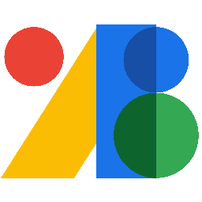
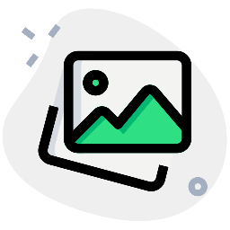

Land-book
Une galerie de pages d'accueil de vrais sites, rangées par secteur d'activité et par style.
Une liste d'outils gratuits pour concevoir un site web, surtout du côté du design : de quoi trouver des idées, choisir des couleurs et une police, puis remplir la page. .
Une galerie de pages d'accueil de vrais sites, rangées par secteur d'activité et par style.

Une galerie de pages d'accueil, avec en prime des maquettes et des polices réutilisables librement.
La vitrine des designers. On y voit surtout des intentions, rarement des sites qui existent vraiment.
Des associations de polices et de couleurs présentées ensemble, sur une page d'exemple.

Génère une palette de cinq couleurs à la barre d'espace, et verrouille celles qu'on veut garder.

Une bibliothèque de polices libres, que l'on relie à sa page en une ligne, sans rien télécharger.

Un très grand catalogue d'icônes, en SVG comme en PNG. L'offre gratuite demande de citer l'auteur.

Le jeu d'icônes de Google : moins fourni que les catalogues ouverts, mais toutes ses icônes ont le même trait.

Fournit une image d'exemple à la taille demandée, directement par son adresse. Le faux texte, mais en photo.

Des photos libres, avec une recherche en français et des collections toutes prêtes.
La plus grande banque de photos libres, et la plus reconnaissable : ses images se croisent partout.

Des illustrations en SVG dont on choisit la couleur avant de les télécharger.
Des personnages à assembler, pose et vêtements au choix. Utile quand une photo ferait trop réaliste.
Une extension de navigateur qui superpose les problèmes d'accessibilité sur la page, et liste dans son panneau Order l'ordre où la touche Tab atteint les éléments.
Une extension qui annonce les technologies employées par le site qu'on visite. La réponse à « c'est fait avec quoi ? ».

Une extension pipette, qui relève la couleur exacte d'un pixel à l'écran et son code hexadécimal.
Intégré à Chrome. Note la page sur cent en performance, en accessibilité et en référencement.